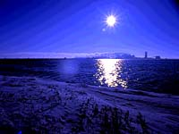
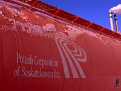
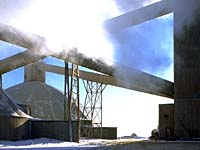

|
"Hazardous Area". Please be careful where you walk.
The trains, heavy equipment, machinery, brine pools
and other hazards can be very dangerous.
For a special adventure, take an organized tour-one mile underground at one of our Potash mines. Call ahead and find out how to get on a tour.
|
Potash Corporation of Saskatchewan - Allan Division |
Potash is taken from six mines in Saskatchewan, five of which the Potash Corporation of Saskatchewan (PCS) owns and operates. The PCS high quality reserves will last a century. |

PCS produces standard, coarse, granular, soluble and industrial agricultural grades (used in water softeners, ice melt, television tubes, computer screens, soaps and pharmaceuticals.
|
PCS Potash mines are right at home on the prairies, between pasture and grainfields. The Allan mine site is located just off Highway 16, 48 km (30 miles) east of Saskatoon, near the community of Allan, SK. The images on this page are of the outside of the mine site, showing the mill and shafts.
|
Allan has the capacity to mine 1.885 million tonnes KCl (potassium chloride, or potash) a year from deposits 1,036 meters
(3,400 feet) below the Saskatchewan prairie near Saskatoon. |
Its ore deposits stretch 10 kilometers (6 miles) from the
main shafts which carry employees down to the mining level and ore up to the mill. There are 269 active employees.
|

Part of the milling process of potash is that of crushing, grinding and de-sliming. Extracted ore is dry-crushed and put into a brine solution much like sea water. It is then ground into distinct particles of potash and salt, pumped into tanks
and agitated to "wash" the clay off the ore. The image at the left is a brine pool. Flotation occurs next and this is where substances are added to the salt and potash mixture to separate the particles. The potash particles rise to the surface and are skimmed off. The salt particles sink to the bottom and are drawn off. The brine is recycled back into the milling process.
|
PCS participates in the environmental research program on improved management of potash tailings and decommissioning of plants that is jointly supported by members of the Saskatchewan Potash Producers Association. PCS is also conducting in-house research aimed at developing technology that will extend the life of tailings management areas.
|
Tailings of the Allan mine are shown in the image at the left. A decommissioning and reclamation plan for each of the PCS Saskatchewan potash mines has been submitted to the Saskatchewan Department of Environment and Resource Management. An initial response to the proposed plan was received by the Company in February 1998 and discussions with the environmental regulatory authorities are continuing. Financial assurance for the plans will be arranged by March 31, 1999 or within one year after approval of the plan, whichever is later.
PCS Potash has an active recycling program. Contracts are in place with licensed recycling companies to remove all waste oils, solvents and batteries. Waste paper is given to a local charity and scrap metals are sold or given to local salvagers. The Company purchases recycled oil for use as a dedusting agent on potash.
|
Most product from Allan travels
by rail via Canadian Pacific and Canadian National railways to centers throughout North America for domestic sales or to ports for delivery offshore.
Potash destined for offshore markets is exported via waterways by Canpotex, the export company owned by all Saskatchewan potash producers, from the West Coast, the Great Lakes and the Gulf of Mexico.
|
Industrial Grade potash products, referred to as WSM 0.5, 0.2, (fine and chicklets) and refined, are available from Allan and are transported to market by rail or truck. This product is used in chlor-alkali production of potassium hydroxide and for drilling muds in oil fields. Agricultural grades of potash produced from Allan include white, pink and red granular form. Product is shipped by rail or truck to its destination. Uses of this type of potash include directly application fertilizer and as an ingredient in N-P-K blended fertilizers.
|
Standard form, again red, white and pink is used for direct application and manufacturing of N-P-K fertilizer rather than for blending, used for the glassmaking industry, for animal feed to replace sodium chloride
and is used as a flux or agent in blast furnaces for metal production.
White soluble form is used in the production of liquid fertilizers. Both clear liquids and high analysis suspension.
Both of these forms are produced at Allan and transported via rail or truck from the site.
|
Nearly 95 percent of the commercially produced K is used in agriculture. The remaining 5 percent is used for industrial purposes and for products common in the home.
|
Fertilizer K is often referred to as "potash". Early American settlers coined that name. They produced potassium carbonate needed for making soap by evaporating water filtered through wood ashes. The ash-like residue remaining in the large iron pots was called "pot ash". This process is registered as the first U.S. patent. |
|
|
Commercial production of potash in the U.S. began when supplies from Germany were stopped due to military conflicts. Carlsbad, New Mexico, became the hub of U.S. production. Other production from brines was developed in Utah and California. Then, in the early 1960s potash from vast, high
quality Canadian reserves became available. As a result, Canada now supplies about three-fourths of the potash used in U.S. crop production. |
Potassium is often described as the regulator in crop production. It has earned this distinction due to its influence upon protein and starch formation, its regulation of over 60 enzyme systems controlling the development of crop quality, and its positive interaction with N, P and other essential crop production inputs.
|
|

Huge warehouses at the mines collectively provide storage for over one million tonnes of potash products. This much potash would fill a train with
over 12,000 cars stretching 120 miles.
|
Miners begin their day by travelling about 1,000 meters straight down into the earth. Then they travel as far as six kilometers by jeep through underground tunnels before they arrive at their work-site. They mine the ore by machine, then it is transported through a maze of tunneled roads and brought to the surface to be milled.
|
Miners travel to the mining level in a cage down through a shaft. The shaft is vertical, dug from ground surface to the mining level, generally from four to six meters in diameter. Each mine has two shafts, one for transporting people and one for transporting product.
|
Few chemicals are used in potash production and common salt is the only waste product. Potash production is a chemically simple process which produces no toxic wastes. The only chemicals needed in the process are oils, amines, hydrochloric or acetic acid, alcohols, synthetic polymers and starch. The only waste produced is common salt.
|
PCS Potash is in the process of removing PCBs from its mines. Four of the seven mines are now free from PCBs and this material is being phased out at other mines.
|
The skips are boxes in the production shaft that each hold about 23 tonnes. They are hoisted to the surface at speeds 550-1,100 meters per minute. The hoist consists of four headropes with two skips per side. While one unloads ore on the surface, the other is loaded at the bottom.
|
|
|
|
|
|

Canadian mines owned by PCS Potash are required to report pollutant discharges under the National Pollution Release Inventory program. However, no mine discharges a quantity of any pollutant for which a report is required. |

All PCS Potash mines operate in compliance with federal, provincial and state legislation which regulate all aspects of waste management. The only significant air emission is salt dust produced by the product dryers which use natural gas or low sulphur fuel oil. The concentration of salt in the dryer emission is kept below regulated levels. Wet scrubbers or electrostatic precipitators are used for air pollution prevention.
|
With one notable exception, the salt wastes or tails are stored in contained areas on company property. All PCS Potash operations are zero discharge facilities with no process effluents being discharged to surface water bodies. Extensive containment facilities have been installed around each tailings storage area to prevent brine, which is produced when rain dissolves the salt tails, from escaping. |
Deep injection wells are used to dispose of excess brine which has been collected in the tailings storage areas. These wells inject brine about 1,200 meters (4,000 feet) below ground level into isolated geological formations which are naturally saline. Salt remaining in storage when the mines are exhausted will be dissolved and injected in these formations. |
Facilities for controlling pollution, managing wastes and maintaining air quality are constantly improved by the Company's potash operations. Environmental audits are regularly conducted to ensure compliance with regulations and corporate environmental policy. |

|
|
|

|